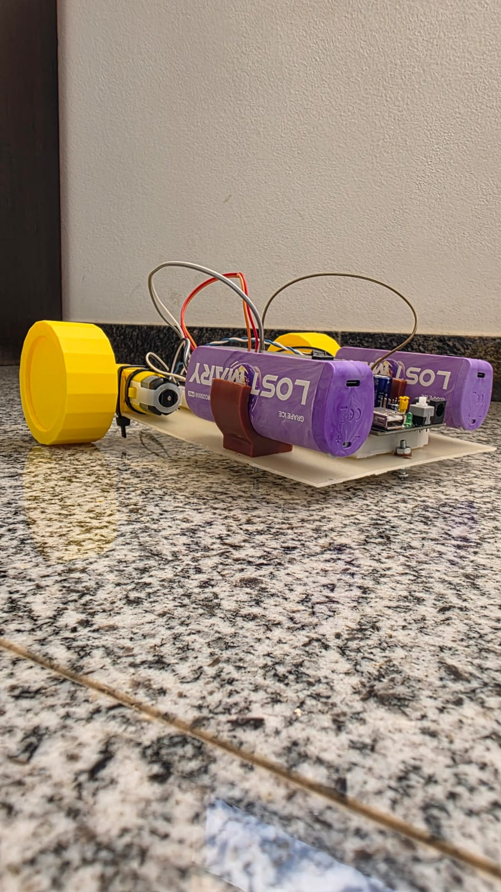
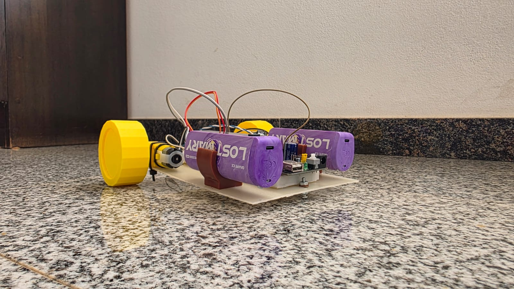

Robot controlado mediante Bluetooth con un microcontrolador ESP32
El objetivo principal de este robot fue aprender a programar un microcontrolador y comprender el ensamblaje de sus componentes mecánicos y electrónicos.
El robot se conecta mediante Bluetooth a un dispositivo móvil (celular). A través de una aplicación, recibe comandos en tiempo real para desplazarse (avanzar, retroceder, girar a la izquierda o derecha) y regular su velocidad. Además, incluye luces LED decorativas instaladas en la parte inferior del robot para darle iluminación inferior.
| MATERIAL / HERRAMIENTA | CANTIDAD | NOTAS / ESPECIFICACIONES |
|---|---|---|
| Placa ESP32 | 1 | Microcontrolador con Bluetooth integrado |
| Puente H (L298N) | 1 | Módulo para controlar dirección y velocidad de los motores |
| Motores reductores DC | 2 | Incluyen sus respectivas ruedas |
| Protoboard | 1 | Base para realizar las conexiones sin soldadura |
| Sensor ultrasónico (HC-SR04) | 1 | Encargado de detectar obstáculos frontales |
| Baterías modificadas | 2 | Suministran la energía eléctrica al robot |
| Módulo de alimentación para protoboard | 1 | Regula el voltaje adecuado desde las baterías hacia el circuito |

Reunimos todos los componentes necesarios. Fijamos los motores reductores a la estructura del chasis y revisamos el diagrama de pines (*pinout*) del ESP32 para verificar qué conexiones utilizaremos.
Conectamos el ESP32 al puente H para el control de los motores, vinculamos el sensor ultrasónico a los pines digitales correspondientes y cableamos las tiras LED. Finalmente, alimentamos la protoboard mediante el módulo regulador acoplado a las baterías.
Abrimos el IDE de Arduino, configuramos la placa ESP32, seleccionamos el puerto COM correcto y cargamos el código que gestiona la comunicación Bluetooth y el control del puente H.
Vinculamos el smartphone al Bluetooth del ESP32 mediante una aplicación de control (como Serial Bluetooth Terminal o Dabble) y enviamos los comandos para probar el movimiento del robot.
A continuación se presenta el código base listo para subir al ESP32 utilizando la librería de Bluetooth Serial:
#include "BluetoothSerial.h"
BluetoothSerial SerialBT;
// --- Pines del Puente H (L9110s) ---
const int MA_F = 16;
const int MA_B = 17;
const int MB_F = 18;
const int MB_B = 19;
// --- PWM ---
const int freq = 1000;
const int resolution = 8;
// --- Variables de control ---
int velocity = 180;
char lastCmd = 'S';
// --- Lectura de velocidad no bloqueante ---
String velBuffer = "";
bool readingVel = false;
// --- Prototipos ---
void movement(char c);
void stopAll();
bool isValidCmd(char c);
// ============================================================
// SETUP
// ============================================================
void setup() {
Serial.begin(115200);
SerialBT.begin("TropiBot");
ledcAttach(MA_F, freq, resolution);
ledcAttach(MA_B, freq, resolution);
ledcAttach(MB_F, freq, resolution);
ledcAttach(MB_B, freq, resolution);
movement('S');
SerialBT.println("Robot listo! Comandos: F, B, L, R, S, V+numero");
}
// ============================================================
// LOOP
// ============================================================
void loop() {
if (!SerialBT.available()) {
delay(10);
return;
}
char cmd = SerialBT.read();
if (cmd == '\r' || cmd == '\n') {
if (readingVel) {
readingVel = false;
if (velBuffer.length() > 0) {
velocity = constrain(velBuffer.toInt(), 0, 255);
velBuffer = "";
SerialBT.printf("Velocidad: %d\n", velocity);
if (lastCmd != 'S' && isValidCmd(lastCmd)) movement(lastCmd);
}
}
return;
}
cmd = toupper(cmd);
// --- Modo lectura de velocidad no bloqueante ---
if (readingVel) {
if (isDigit(cmd)) {
velBuffer += cmd;
if (velBuffer.length() >= 3) {
readingVel = false;
velocity = constrain(velBuffer.toInt(), 0, 255);
velBuffer = "";
SerialBT.printf("Velocidad: %d\n", velocity);
if (lastCmd != 'S' && isValidCmd(lastCmd)) movement(lastCmd);
}
} else {
readingVel = false;
velBuffer = "";
}
}
if (cmd == 'V') {
readingVel = true;
velBuffer = "";
return;
}
if (!isValidCmd(cmd)) {
SerialBT.println("Comando no reconocido. Usa: F, B, L, R, S, V+numero");
return;
}
lastCmd = cmd;
movement(cmd);
}
// ============================================================
// VALIDACIÓN
// ============================================================
bool isValidCmd(char c) {
return (c == 'F' || c == 'B' || c == 'L' || c == 'R' || c == 'S');
}
// ============================================================
// MOTORES
// ============================================================
void stopAll() {
ledcWrite(MA_F, 0);
ledcWrite(MB_F, 0);
ledcWrite(MA_B, 0);
ledcWrite(MB_B, 0);
}
void movement(char c) {
stopAll();
switch (c) {
case 'F':
ledcWrite(MA_F, velocity);
ledcWrite(MB_F, velocity);
SerialBT.println("Avanzando");
break;
case 'B':
ledcWrite(MA_B, velocity);
ledcWrite(MB_B, velocity);
SerialBT.println("Retrocediendo");
break;
case 'L':
ledcWrite(MA_F, velocity);
ledcWrite(MB_B, velocity);
SerialBT.println("Girando izquierda");
break;
case 'R':
ledcWrite(MA_B, velocity);
ledcWrite(MB_F, velocity);
SerialBT.println("Girando derecha");
break;
case 'S':
SerialBT.println("Detenido");
break;
}
}